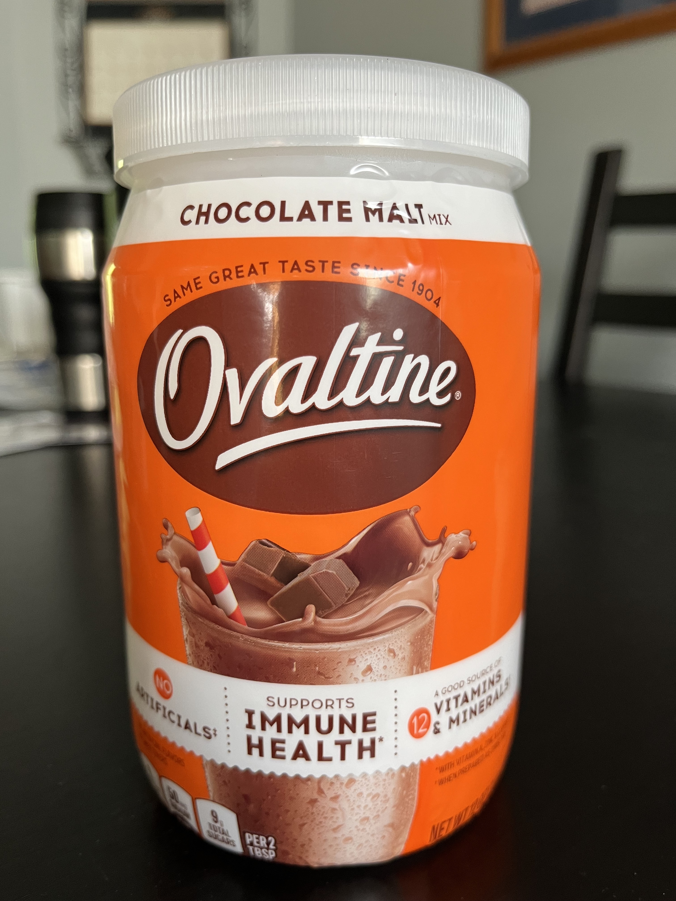

Home / The Summer Foodie Challenge / Malted "Forever" Brownies
I feel confident in saying that most everyone has strong opinions about what a brownie should and should NOT be. There are some who believe that the chocolate in brownies should be from cocoa only; others swear that the chocolate must be cocoa from melted from bars or chips. Still, others believe that brownies do not have to have chocolate at all, and they call those creations "blondies." If you prefer blondies, please leave this website immediately. There is nothing for you here.
Some brownie-lovers contend that brownies must have a crackle top and fudgy texture; others (complete monsters, I should note) look for a cakey texture in their brownies. Yet no matter these preferences, brownie lovers can likely agree that brownies should be 1) chocolately, 2) tender, and 3) sweet but not sickeningly so.
Over the years, I have tried myriad brownie recipes and box brownies. My favorite box brownie would have to be Ghirardelli Triple Fudge Brownie Mix. However, I have also discovered a couple of brownie recipes, when I crave that homemade confection taste, that are my go-to recipes. The recipe I frequent the most is Tasty's "Ultimate Brownies" recipe. This recipe delivers consistent results and the aforementioned chocolatey, tender, sweet goals. Another recipe to consider for those who are simply looking for a "brownie pilgrimage" would be Alvin Zhou's "100-Hour Fudgy Brownies." I use the word pilgrimage because while Zhou's video in which he makes the brownies is ectasy itself, this recipe will test your near-religious devotion to brownies, as well as cost you time and money for the ingredients. I feel like brownie lovers should try this recipe at least once in their lives and then never again--unless you need to impress someone or have some money to burn with the 21 ounces of chocolate (nearly 5 bars) that this recipe requires.
Among brownie circles, the other brownie recipe that has garnered attention is Claire Saffitz's Malted "Forever" Brownies. I had never made these brownies before; however, I was interested if this recipe could dethrone Tasty's "Ultimate Brownies" recipe as the best brownie recipe.

Saffitz's brownie recipe ingredients are standard fare for brownies with one exception: malted milk powder. What is malted milk powder? It is a mixture of malted barley, wheat flour, and evaporated whole milk powder. Malting grain means soaking the grain so that it begins the germination process. Fun fact: malting barley is also a step in beer-making. Does this mean that the brownies will taste like beer? Not at all. Adding malt flavor to chocolate has been around for decades and was a feature of old soda fountain shops. Also, if you like Whoppers candy, you are enjoying the flavor of malt in these "malted milk" balls.
The only problem with this ingredient is that I had a difficult time finding malted milk at grocery stores. However, I did manage to remember from one of my favorite Christmas movies, A Christmas Story, that a malted product existed: Ovaltine. In the film, Ralph poured so much energy into decoding Little Orphan Annie's message, which ultimately was the advertisement, "Drink more Ovaltine." When I first watched the film, I had no idea what Ovaltine was until my mom explained to me that it was a malted chocolate milk drink. With this memory, I checked the grocery app to see if Ovaltine still existed; it did. With Ovaltine in hand, I understood that this product wasn't simply malted milk powder, so I examined its ingredients. One of the top ingredients was sugar, which informed my decision to reduce the sugar in Saffitz's recipe by two tablespoons, the amount of malted milk powder called for in the recipe.
The only other change to the original recipe I made was the size of the pan. The recipe calls for an 8 x 8 square pan; however, I had a 9 x 9 square pan. Therefore, I carefully watched the bake time to ensure that I did not overbake the brownies due to the larger pan size.
Following Saffitz's recipe, I began by making the chocolate mixture.
Then, I combined all of the dry ingredients.
Next, I added the sugar and eggs to the chocolate mixture.
In the next step, I added the dry ingredients to the chocolate/sugar/egg mixture, which created a thick, luscious batter.
The last step of preparing the batter was folding in the milk chocolate chips.
After baking and cooling, this was the result.
Here are my thoughts on Claire Saffitz's Malted "Forever" Brownies recipe:
| Characteristic | Pro | Con |
|---|---|---|
| Taste | The brownie offers a rich, chocolate flavor with some caramel notes thanks to the brown sugar. The malted milk (in this case, the Ovaltine) provides a subtle note that in no way overtakes the flavor of the brownie. | This brownie is sweet. If you like your desserts on the sweeter side, this is for you. I prefer dark chocolate and desserts that are moderately sweet, and this brownie recipe falls within my boundaries of what is acceptably sweet. One of the drivers for the sweet notes in this recipe is the milk chocolate chips, which are naturally sweeter than other types of chocolate chips. |
| Texture | This recipe produces a very fudgy consistency. Even though it is cooked through completely, it still holds the characteristic of being soft, chewy, and moist. The edges are firm but not excessively chewy, which can happen due to the sugar content of some recipes. | For some, especially those who prefer cakey brownies, the texture of this recipe may be too fudgy. The final product gives the impression of a just "under-baked" consistency. Therefore, if you like a firmer texture for your brownies, this recipe will leave you quite disappointed. |
| Appearance | The brownie is attractive, with its shiny exterior and milk chocolate chips peering through. When cut, the brownie holds its shape well without excessive crumbs or excessive smears and tears of the interior. | If you are looking for the classic flaky, crinkly brownie top, this recipe does not deliver. The culprit might be the sugar not dissolving completely, which could be accomplished by mixing the eggs with the sugar and then adding that mixture to the chocolate before adding the other dry ingredients. |
| Navigating the Recipe | This recipe is easy to reproduce, and the steps are fairly standard for a brownie recipe. | The only issue with this recipe is finding the malted milk powder. Even though a few of the grocery stores near me did not have malked milk powder, I was able to find an alternative (Ovaltine). Also, I found malted milk powder on Amazon. But then the question arises: What do I do with the rest of this malted milk powder after making these brownies? |
I don't think that Saffitz's Malted "Forever" Brownies recipe has surpassed my personal favorite, Tasty's "Ultimate Brownies." Yet I might give Saffitz's recipe another try with the following alterations: